Rediseño de las etapas en las que la gente se iba sin publicar: crear la cuenta, editar una invitación o un link en bio y armar una tienda online. Todo en el teléfono y con lo que de verdad necesita cada tipo de página.
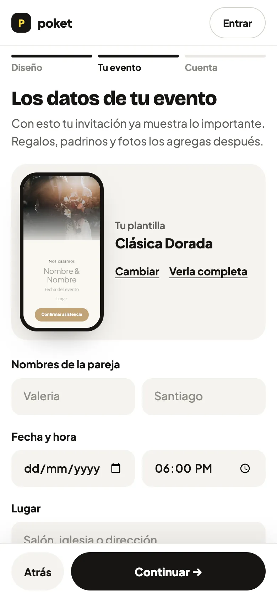
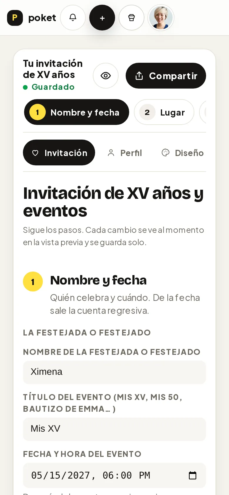
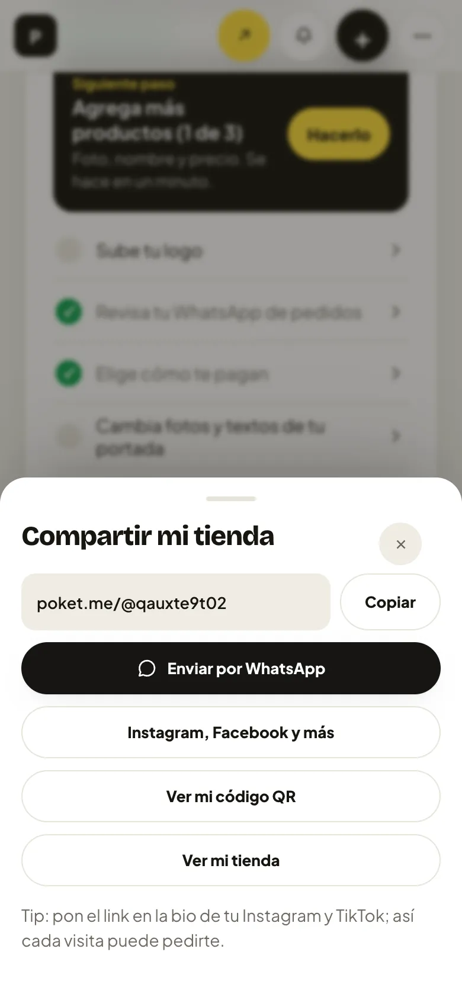
Poket ya tenía plantillas buenas. El problema estaba entre elegir la plantilla y publicar: pantallas genéricas para casos distintos, campos escondidos y ningún botón claro para compartir. Una pareja que quería su invitación de boda abría un editor pensado para links de Instagram.
Así se veían las tres etapas a 390 px antes del cambio. Cada lista sale de recorrerlas como un usuario nuevo y medir.
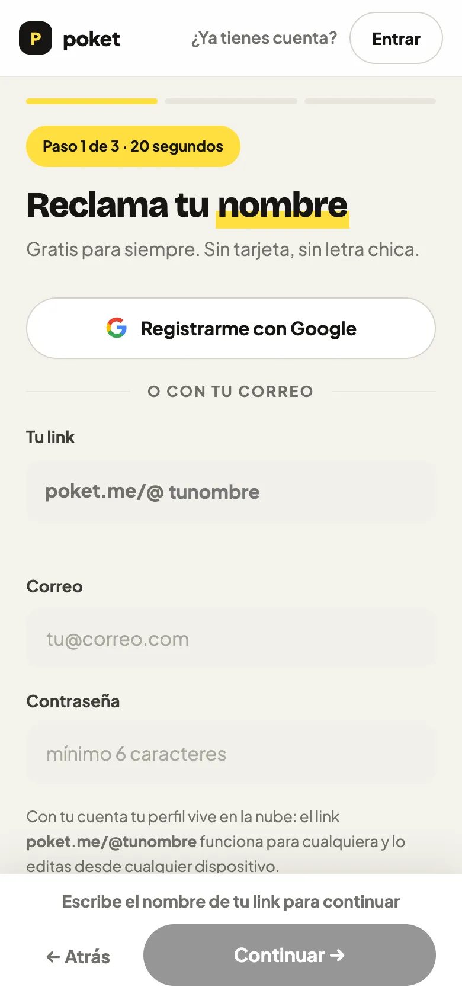
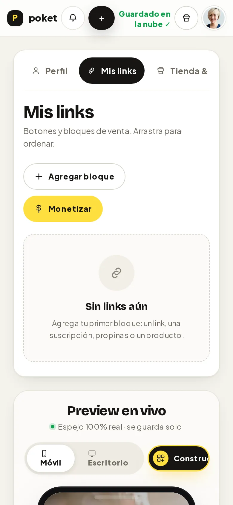
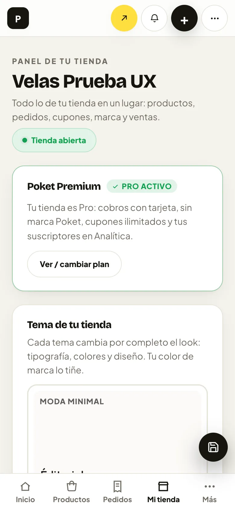
Cuatro metas que se pueden comprobar en el teléfono, sin opiniones de por medio.
toques para llegar a los nombres de una invitación recién creada.
toque para compartir la página o la tienda por WhatsApp.
mínimo en cada campo de texto, para que el teléfono no haga zoom.
errores de JavaScript y nada de scroll lateral a 390, 800 y 1440 px.
Antes de tocar el diseño se revisó todo lo que ya estaba publicado, rama por rama, con navegador de verdad.
demos de plantillas abiertas una por una (102 de perfil e invitación, 48 de tienda). Ninguna rota.
páginas de carta QR, citas, reseñas y cobros probadas como si el usuario estuviera en México y en Perú.
perfiles reales seguían con la bio de ejemplo o vacíos. Señal clara de que la gente no terminaba de editar.
de 387 sesiones llegaron desde asistentes de IA en 28 días. El canal que más crece no es Google.
de 100 en la auditoría técnica: el SEO de base estaba bien, el freno estaba dentro del producto.
fallos de precio y país corregidos de paso: en México, citas mostraba «S/ 59» en vez de $299.
El cambio de fondo: cada tipo de página tiene su propio camino y el editor sabe qué estás haciendo.
Baja fidelidad de las tres pantallas que más cambian.
No se inventó una marca nueva: se ordenó la que Poket ya tenía en producción, con sus mismos colores y su misma letra.
Rejilla: una columna con 16 px de margen en el teléfono; en escritorio, panel a la izquierda y vista previa a la derecha. Zonas táctiles de 44 px como mínimo.
Capturas reales de poket.me después del cambio, tomadas el 22-nov-2026.
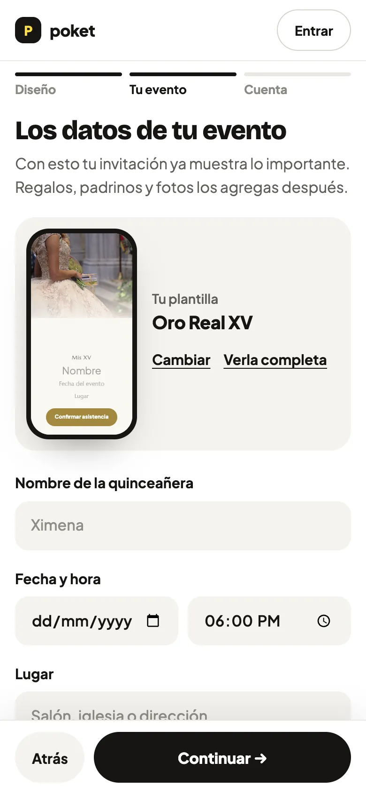
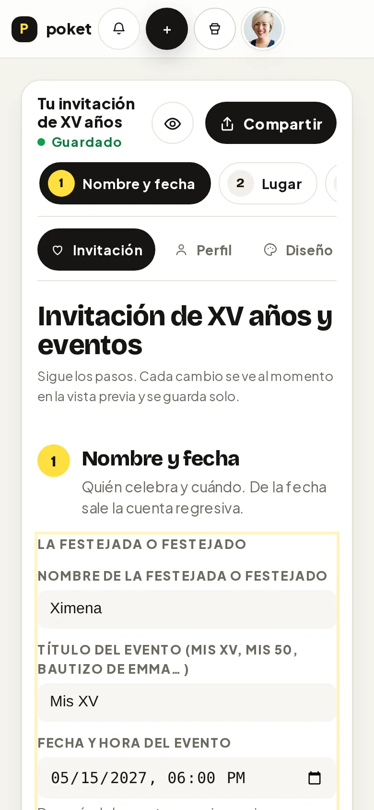
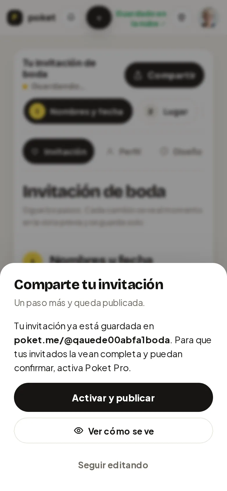
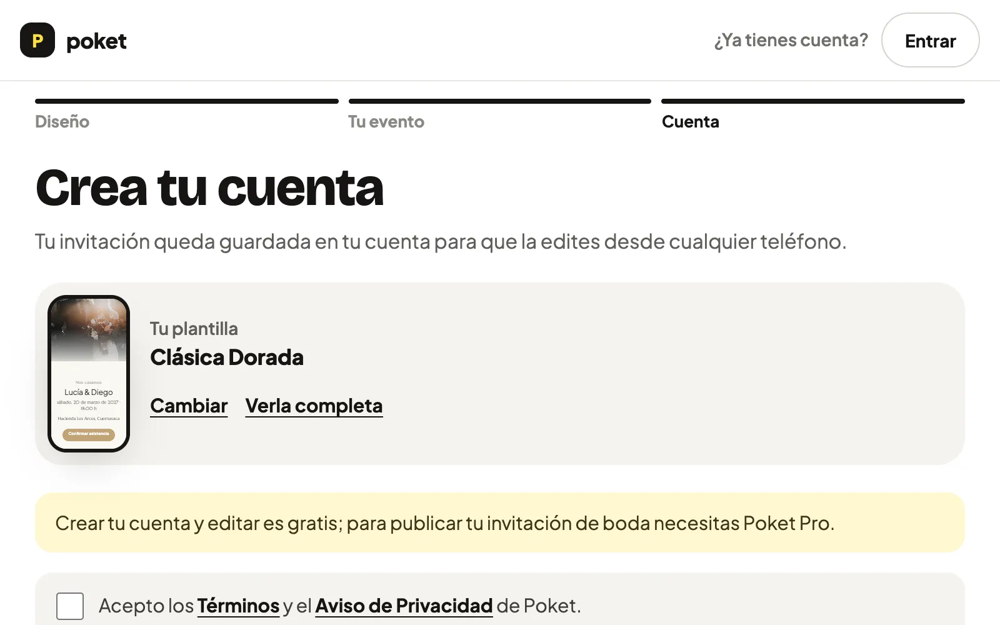
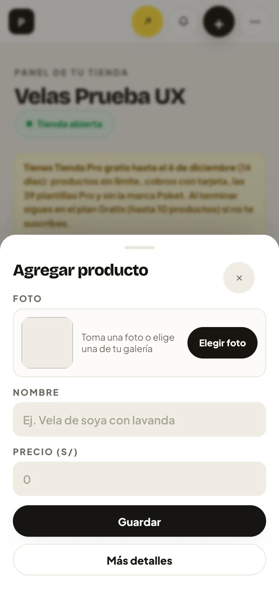
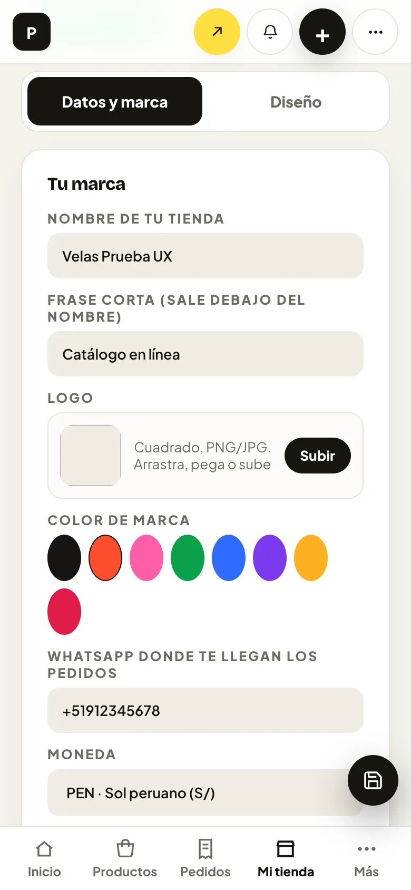
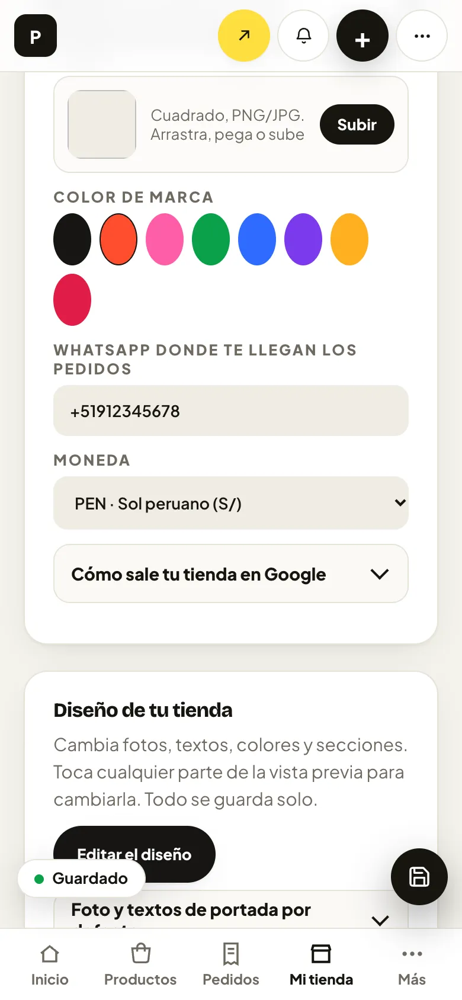
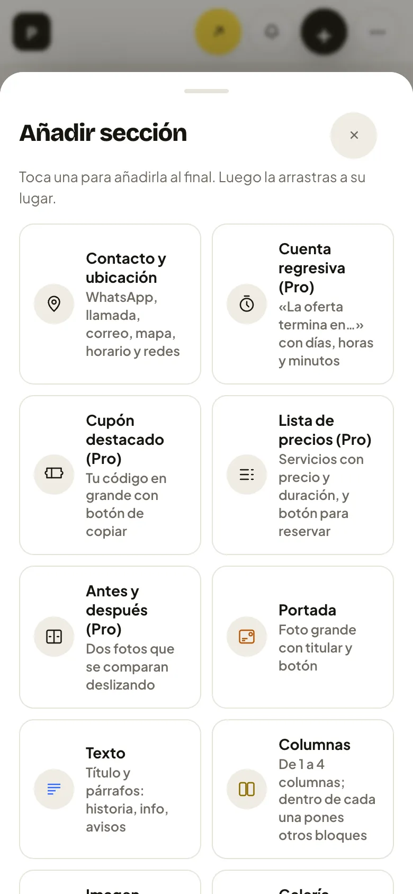
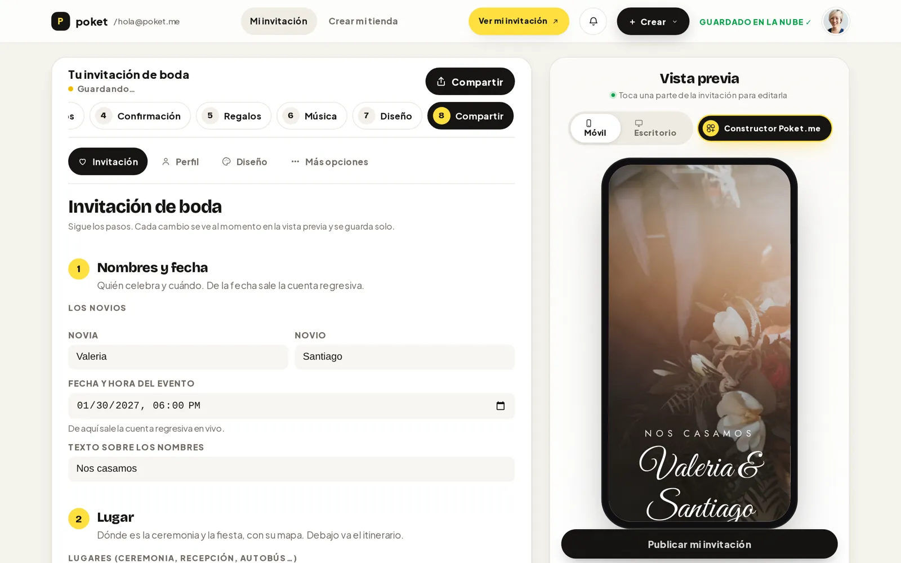
Arrastra la línea amarilla sobre cada teléfono.
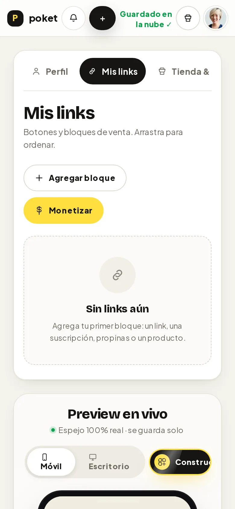
Movimiento solo donde ayuda a entender qué pasó. Se apaga si el teléfono pide menos animación.
Escribes y el estado cambia solo. Nada de botón «Guardar» escondido.
La guía marca en qué paso vas; tocar la vista previa te lleva al campo.
Lo que se midió en el teléfono (390 px) antes y después, el mismo día, con cuentas de prueba que luego se borraron.
| Qué | Antes | Después |
|---|---|---|
| Llegar a los nombres de una boda | 1 toque + 2.313 px de scroll | 0 toques, a 594 px |
| Llegar a la música de la invitación | 7.910 px de scroll | 1 toque |
| Llegar a la confirmación de asistencia | 5.483 px de scroll | 1 toque |
| Compartir la invitación | Sin forma real | 1 toque (link, WhatsApp, QR) |
| Campos con letra menor de 16 px en el editor | 94 | 0 |
| Botones menores de 44 px en el editor | 34 | 0 |
| Textos menores de 13 px en el editor | 94 | 0 |
| Crear una invitación con la plantilla elegida | ~7 toques y sin pedir nombres | 2 pantallas y 4 toques, con nombres, fecha y lugar |
| Crear un link en bio | 6 toques, terminaba sin confirmación | 5 toques y «Tu página ya está publicada» (9 s en la prueba) |
| Llegar al logo de la tienda | 1 toque + ~3 pantallas de scroll | 1 toque |
| Compartir la tienda por WhatsApp | Copiar y abrir WhatsApp a mano | 1 toque |
| Recorrido de la vendedora (robot QA) | — | 18 de 18 pruebas bien |
Publicaciones y ventas: medición desde el 22-nov-2026. No se ponen cifras de conversión hasta tener al menos 28 días de datos.
Gracias por leer.